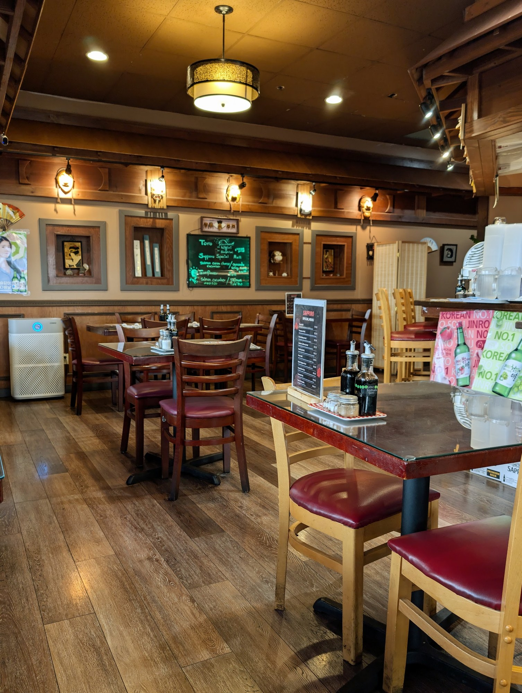

The room on Pacific Highway
Sizable portions, in a cozy, low-key setting
That line is Google's own description of this place — and it's about the most accurate sentence written about it anywhere.
Sapporo sits in the Fife Business Park, set back off Pacific Highway East with its own lot. Inside it's a full dining room: dark panelling and beams, hardwood, oxblood chairs, framed prints and chalkboards down one wall, and pendant lamps kept low over the tables. Beer and wine, no reservations, walk in and sit down.
Their own printed chopstick sleeve calls it an authentic Japanese restaurant, and the board backs that up — twenty sections deep, from nigiri and forty-two named rolls to sukiyaki, katsu, udon and donburi.
Nobody has ever put the owner's name, or the year this place opened, anywhere online. Those belong on this page — they're the two things worth asking about at the host stand.